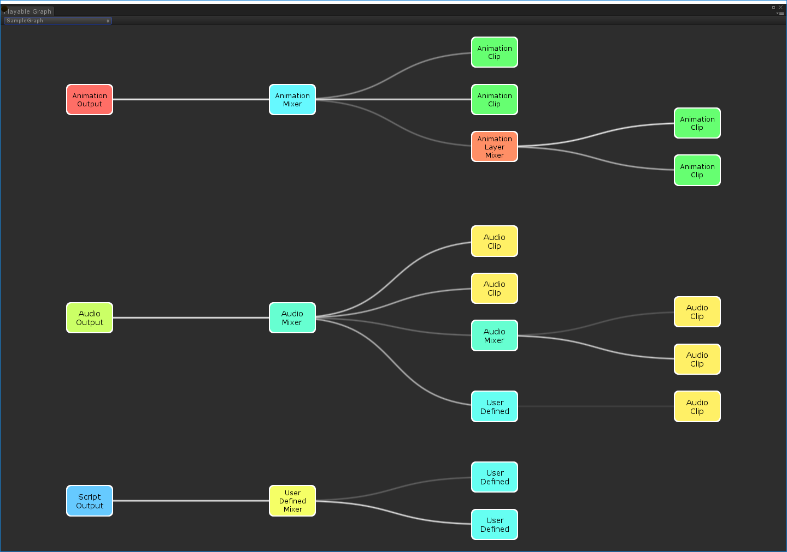
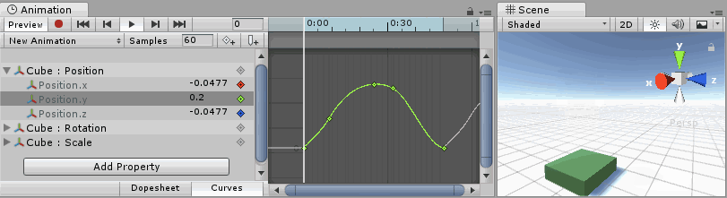

Taming the Timeline
Natalie Cuthbert
Non-Linear Editors
Tracks, Clips & Blends
Unity Timeline?
Cutscenes Only
Good for VFX
Plugins: Custom Tracks & Clips
Unity = Tangly
Animation Ecosystem
Playables, Mechanim & Animation Clips
Playables

Low-level
Extensible
Animation Clip
Built on Playables
Single Object Hierarchy
Animate Behaviour Properties

Can be used with Timeline
Mechanim
My Enemy
Built on Playables & Uses Animation Clips
High Level UI & Api
Variables & Triggers
State Machine-ish
Can be used with Timeline
Humanoid Animation is Focus
Good for VFX?
Effect: Communication
Effect: Composition of elements
Legibility requires nuance in timing
Scripting?
Efficiency & Control
DEMO
Customizing Timeline
Custom Clips, Markers, & Tracks
Mixer
TAKEAWAYS
Data Driven
Artist Friendly
Fine Control
Extensible
Useful when any sequencing required
Single Clip / Playable Director
Bindings link tracks with scenes
Signals & Markers can be used for discrete events